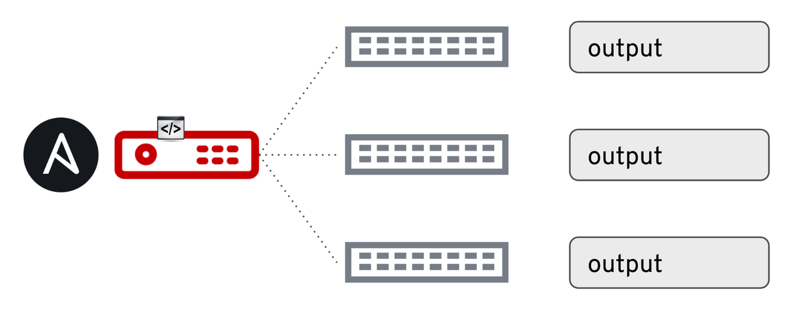

Command Module Deep Dive for Networks
Command Module Deep Dive for Networks
Enterprise customers often ask the Ansible Network team about the most
common use cases for network automation. For this blog post I want to
talk about one of the most used (and most versatile) set of network
modules: the command modules. The command modules let you run
networking commands with Ansible, the same way a network engineer would
type them on the command line. With Ansible, though, the output doesn't
just fly by the terminal window to be lost forever; it can be stored and
used in subsequent tasks. It can also be captured in variables, parsed
for use by other tasks, and stored in host variables for future
reference.
Today we're going to cover basic use of the network command modules,
including retaining command output with the register parameter. We'll
also cover scaling to multiple network devices with hostvars and
adding conditional requirements with the wait_for parameter and three
related parameters: interval, retries, and match. The takeaway
from this blog post is that any repeatable network operations task can
be automated. Ansible is more than configuration management, it allows
network operators the freedom to decouple themselves from routine tasks
and save themselves time.
There are command modules for a variety of platforms, including all the modules supported under the network offering:
| Network Platform | *os_command Module |
|---|---|
| Arista EOS | eos_command |
| Cisco IOS / IOS-XE | ios_command |
| Cisco IOS-XR | iosxr_command |
| Cisco NX-OS | nxos_command |
| Juniper Junos | junos_command |
| VyOS | vyos_command |
Basic Command Module Usage
Here is a simple playbook using eos_command to run show version:
--- - name: COMMAND MODULE PLAYBOOK hosts: eos connection: network_cli tasks: - name: EXECUTE ARISTA EOS COMMAND eos_command: commands: show version register: output - name: PRINT OUT THE OUTPUT VARIABLE debug: var: output
There are two tasks; the first task uses eos_command with a single
parameter called commands. Since I am only running one command I can
just type show version on the same line as commands. If I had more
than one command, I would list each one on a separate line below the
commands: parameter. In this example I use the register
keyword
to save the output of the show version command. You can use the
register parameter at the task level with any Ansible task. The
register parameter defines a variable to store the output of the task
for use in subsequent tasks. In my playbook the variable is called
output.
The second task uses the debug module to print out the content of the variable output, from the previous task. In this case I will see the same output I would have seen if I'd typed "show version" at the command line directly on the EOS device. My playbook prints this output in the terminal window where I ran the playbook. The Ansible debug module is great for checking variables.
Below is the output from running the playbook:
PLAY [eos] ************************************************************************* TASK [execute Arista eos command] ************************************************** ok: [eos] TASK [print out the output variable] *********************************************** ok: [eos] => { "output": { "changed": false, "failed": false, "stdout": [ "Arista vEOS\nHardware version: \nSerial number: \nSystem MAC address: 0800.27ec.005e\n\nSoftware image version: 4.20.1F\nArchitecture: i386\nInternal build version: 4.20.1F-6820520.4201F\nInternal build ID: 790a11e8-5aaf-4be7-a11a-e61795d05b91\n\nUptime: 1 day, 3 hours and 23 minutes\nTotal memory: 2017324 kB\nFree memory: 1111848 kB" ], "stdout_lines": [ [ "Arista vEOS", "Hardware version: ", "Serial number: ", "System MAC address: 0800.27ec.005e", "", "Software image version: 4.20.1F", "Architecture: i386", "Internal build version: 4.20.1F-6820520.4201F", "Internal build ID: 790a11e8-5aaf-4be7-a11a-e61795d05b91", "", "Uptime: 1 day, 3 hours and 23 minutes", "Total memory: 2017324 kB", "Free memory: 1111848 kB" ] ] } } PLAY RECAP ************************************************************************* eos : ok=2 changed=0 unreachable=0 failed=0
You can see in the output above that both tasks were executed successfully. The first task with the default verbosity has no output, it simply returns the host the task was executed on, eos, with ok and the color green to indicate success. The second task, using the debug module, returns output from the command that was executed. You see the same information in two different formats:
- stdout
- stdout_lines
The stdout returns everything a human operator would have seen on the command line in one large string. The stdout_lines returns a list of strings, making the information easier to read. Each item is a separate line that was returned from the command.
Here is the output to see what that looks like:
Arista EOS command line output
eos>show vers Arista vEOS Hardware version: Serial number: System MAC address: 0800.27ec.005e Software image version: 4.20.1F Architecture: i386 Internal build version: 4.20.1F-6820520.4201F Internal build ID: 790a11e8-5aaf-4be7-a11a-e61795d05b91 Uptime: 1 day, 3 hours and 56 minutes Total memory: 2017324 kB Free memory: 1116624 kB
Ansible stdout_lines
"stdout_lines": [ [ "Arista vEOS", "Hardware version:", "Serial number:", "System MAC address: 0800.27ec.005e", "", "Software image version: 4.20.1F", "Architecture: i386", "", "Internal build version: 4.20.1F-6820520.4201F", "Internal build ID: 790a11e8-5aaf-4be7-a11a-e61795d05b91", "", "Uptime: 1 day, 3 hours and 23 minutes", "Total memory: 2017324 kB", "Free memory: 1111848 kB" ]
Engineers and folks familiar with JSON and YAML have already noticed another interesting detail: stdout_lines begins with two opening brackets
"stdout_lines": [ [
The two opening brackets show that stdout_lines actually returned a list
of lists of strings. If we modify our debug task slightly we use this
feature to view selections from the output. Since the output only has
one list within the list, that entire sub-list is referenced as list
zero, or the first list. Let's look at a single line from the return
value. I want to grab the System MAC Address for our test. Looking
above at the output, the System MAC address is returned in the
fourth line, which corresponds to line 3 (since computers start counting
from 0). This means we want to grab line 3 of list 0, which corresponds
to output.stdout_lines[0][3].
- name: print out a single line of the output variable debug: var: output.stdout_lines[0][3]
The debug task returns exactly what we need:
TASK [print out a single line of the output variable] ****************************** ok: [eos] => { "output.stdout_lines[0][3]": "System MAC address: 0800.27ec.005e" }
Why would we want that first list to be zero and what is the use case for having multiple lists? It is possible to run multiple commands with one command task.Here is a playbook with three commands:
--- - hosts: eos connection: network_cli tasks: - name: execute Arista eos command eos_command: commands: - show version - show ip int br - show int status register: output - name: print out command debug: var: output.stdout_lines
The output from output now looks like this:
"output.stdout_lines": [ [ "Arista vEOS", "Hardware version: ", "Serial number: ", "System MAC address: 0800.27ec.005e", "", "Software image version: 4.20.1F", "Architecture: i386", "Internal build version: 4.20.1F-6820520.4201F", "Internal build ID: 790a11e8-5aaf-4be7-a11a-e61795d05b91", "", "Uptime: 1 day, 4 hours and 20 minutes", "Total memory: 2017324 kB", "Free memory: 1111104 kB" ], [ "Interface IP Address Status Protocol MTU", "Ethernet1 172.16.1.1/24 up up 1500", "Management1 192.168.2.10/24 up up 1500" ], [ "Port Name Status Vlan Duplex Speed Type Flags", "Et1 connected routed full unconf EbraTestPhyPort ", "Et2 connected 1 full unconf EbraTestPhyPort ", "Et3 connected 1 full unconf EbraTestPhyPort ", "Ma1 connected routed a-full a-1G 10/100/1000" ] ]
List zero corresponds to the show version command, list one corresponds
to the show ip int br command and list two corresponds to the show int status command.
The list number directly corresponds to the order the command was run in.
| Arista EOS Command | Relevant List |
|---|---|
show version |
output.stdout_lines[0] |
show ip int br |
output.stdout_lines[1] |
show int status |
output.stdout_lines[2] |
Scaling Command Module Use: Host Variables
So what happens if we run on two or more network devices at the same time?

The variable output is saved uniquely as a host
variable
per inventory host. If I had three switches and ran this playbook
against them, I would have an output variable for each unique host. For
a demonstration we will grab the IP address from the show ip int br
command above for the Ethernet1 port for just one of the switches,
switch03. The show ip int br corresponds to the second command we
run, and the ethernet1 interface shows up in the 2nd line so we know we
want stdout_lines[1][1]. To reference vars about a specific host we
use the keyword hostvars and do a dictionary lookup on the host we
want.
This is what the debug task will look like:
- name: debug hostvar debug: var: hostvars["switch03"].output.stdout_lines[1][1]
And the output matches what we would expect:
TASK [debug hostvar] *************************************************************** ok: [switch03] => { "hostvars["switch03"].output.stdout_lines[1][1]": "Ethernet1 172.16.1.3/24 up up 1500" }
By default a task will use variables specific to that host, but when using hostvars you can directly reference other host variables.
Conditions in Command Module Tasks: wait_for
The wait_for parameter applies conditional logic directly after a
command is run. This means within the same task you can decide to
purposely fail if output does not match a desired state. By default,
with the above tasks, when there is no wait_for parameter specified
the task is only run one time. However, if the wait_for parameter is
specified the task is run until the condition is met or the maximum
retries (the default is 10 retries) is hit. If I turn on command logging
I can easily see this with a playbook specifically meant to fail for
demonstration purposes:
--- - hosts: eos connection: network_cli tasks: - name: execute Arista eos command eos_command: commands: - show int status wait_for: - result[0] contains DURHAM
This playbook will run show int status 10 times, because it will never find the word DURHAM in the output of show int status.
A show logging command shows me the command was indeed run 10 times:
Mar 24 20:33:52 eos Aaa: %ACCOUNTING-6-CMD: admin vty6 192.168.2.1 stop task_id=17 start_time=1521923632.5 timezone=UTC service=shell priv-lvl=15 cmd=show interfaces status Mar 24 20:33:53 eos Aaa: %ACCOUNTING-6-CMD: admin vty6 192.168.2.1 stop task_id=18 start_time=1521923633.71 timezone=UTC service=shell priv-lvl=15 cmd=show interfaces status Mar 24 20:33:54 eos Aaa: %ACCOUNTING-6-CMD: admin vty6 192.168.2.1 stop task_id=19 start_time=1521923634.81 timezone=UTC service=shell priv-lvl=15 cmd=show interfaces status Mar 24 20:33:55 eos Aaa: %ACCOUNTING-6-CMD: admin vty6 192.168.2.1 stop task_id=20 start_time=1521923635.92 timezone=UTC service=shell priv-lvl=15 cmd=show interfaces status Mar 24 20:33:56 eos Aaa: %ACCOUNTING-6-CMD: admin vty6 192.168.2.1 stop task_id=21 start_time=1521923636.99 timezone=UTC service=shell priv-lvl=15 cmd=show interfaces status Mar 24 20:33:58 eos Aaa: %ACCOUNTING-6-CMD: admin vty6 192.168.2.1 stop task_id=22 start_time=1521923638.07 timezone=UTC service=shell priv-lvl=15 cmd=show interfaces status Mar 24 20:33:59 eos Aaa: %ACCOUNTING-6-CMD: admin vty6 192.168.2.1 stop task_id=23 start_time=1521923639.22 timezone=UTC service=shell priv-lvl=15 cmd=show interfaces status Mar 24 20:34:00 eos Aaa: %ACCOUNTING-6-CMD: admin vty6 192.168.2.1 stop task_id=24 start_time=1521923640.32 timezone=UTC service=shell priv-lvl=15 cmd=show interfaces status Mar 24 20:34:01 eos Aaa: %ACCOUNTING-6-CMD: admin vty6 192.168.2.1 stop task_id=25 start_time=1521923641.4 timezone=UTC service=shell priv-lvl=15 cmd=show interfaces status Mar 24 20:34:02 eos Aaa: %ACCOUNTING-6-CMD: admin vty6 192.168.2.1 stop task_id=26 start_time=1521923642.47 timezone=UTC service=shell priv-lvl=15 cmd=show interfaces status
Here we can look at a real world example. For this playbook everything
is configured to bring up an OSPF adjacency with another device, except
the ip ospf area command. We will apply the command and then use the
wait_for parameter to make sure the adjacency comes up (indicated by
FULL). If full is not found within 10 retries the task will fail.
--- - hosts: eos connection: network_cli tasks: - name: turn on OSPF for interface Ethernet1 eos_config: lines: - ip ospf area 0.0.0.0 parents: interface Ethernet1 - name: execute Arista eos command eos_command: commands: - show ip ospf neigh wait_for: - result[0] contains FULL
Execute the playbook with the ansible-playbook command:
➜ ansible-playbook ospf.yml PLAY [eos] ********************************************************************************************* TASK [turn on OSPF for interface Ethernet1] ******************************************************* changed: [eos] TASK [execute Arista eos command] **************************************************************** ok: [eos] PLAY RECAP ****************************************************************************************** eos : ok=2 changed=1 unreachable=0 failed=0
Checking on the command line confirms the playbook ran successfully:
eos#show ip ospf neigh Neighbor ID VRF Pri State Dead Time Address Interface 2.2.2.2 default 1 FULL/DR 00:00:33 172.16.1.2 Ethernet1
In addition to contains we can use:
-
eq: Equal -
neq: Not equal -
gt: Greater than -
ge: Greater than or equal -
lt: Less than -
le: Less than or equal
There are also three parameters that can be used in conjunction with wait_for. All of these are documented on the individual module pages:
| Parameter | Description |
|---|---|
| interval | Time between each command retry |
| retries | The number of times we retry the task until we fail (or the condition is met) |
| match | Match all of your conditionals or just any of them |
Let's quickly elaborate on the match parameter:
- name: execute Arista eos command eos_command: commands: - show ip ospf neigh match: any wait_for: - result[0] contains FULL - result[0] contains 172.16.1.2
With match: any set, the task will succeed if the result contains
either FULL or 172.16.1.2. With match: all (which is the default),
both must be true before the task can successfully pass. It is far more
likely if you have multiple conditionals that you want them all met
versus just one of them to be true.
Looking for a use-case where you might want to use match: any? Imagine
that you want to confirm internet access to and from a datacenter. For
this particular data center you have five ISPs (Internet Service
Providers), and five discrete BGP connections between your data center
and those ISPs. An Ansible Playbook could check all five BGP connections
and continue on if any of them are up and working, rather than all
five. Just remember that any implies OR versus all which implies
and.
| Parameter | Description |
|---|---|
| match: any | Implicit OR, any conditional can be met |
| match: all | Implicit AND, all conditionals must be met |
Negative Conditions: Handling Inverse Logic
Sometimes you are looking for absences or other negative conditions in
command output. It's tempting to use the neq comparison for any
negative scenario, but it's not always the right choice. If you want the
inverse logic of contains (output from this command should not contain
this) consider using the register keyword to store the output
followed by a when
statement
on a subsequent task. If you want to stop the playbook if conditions are
not met, consider simply using the fail
module
or assert
module
where you can fail on purpose. The neq shown above only makes sense if
you can grab an exact value (if you can get key-value pairs or JSON)
versus getting a string or list of strings. Otherwise you are going to
be doing exact string compares.
Going Further
Read the documentation on Working with Command Output in Network Modules here.
The more specific conditionals like ge, le, etc. can work really well on JSON output from certain networking platforms as shown in the example in the documentation.


 \
\